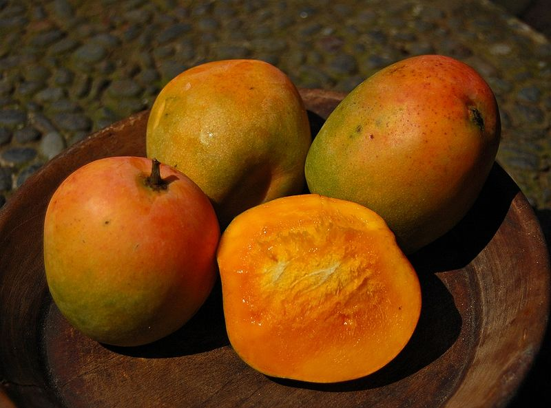

Tentang buah.com

Mangga

Mangga atau mempelam adalah nama sejenis buah, demikian pula nama pohonnya. Mangga termasuk ke dalam marga Mangifera, yang terdiri dari 35-40 anggota dari suku Anacardiaceae. Nama "mangga" berasal dari bahasa Tamil, mankay, yang berarti man "pohon mangga" + kay "buah".[2] Kata ini dibawa ke Eropa oleh orang-orang Portugis dan diserap menjadi manga (bahasa Portugis), mango (bahasa Spanyol dan Inggris) dan lainnya.
Mangga berasal dari daerah di sekitar perbatasan India dengan Burma, dan mangga telah menyebar ke Asia Tenggara sekurang-kurangnya semenjak 1500 tahun yang silam. Buah ini dikenal pula dalam berbagai bahasa daerah, seperti pelem atau poh.
Pohon mangga berperawakan besar, dapat mencapai tinggi hingga 30 m atau lebih, meski kebanyakan mangga pekarangan hanya sekitar 15 m atau kurang.[4] Batang tegak, bercabang kuat; dengan daun-daun lebat membentuk tajuk yang indah berbentuk kubah, oval atau memanjang, dengan diameter sampai 10 m.[5][4] Kulit batangnya tebal dan kasar dengan banyak celah-celah kecil dan sisik-sisik bekas tangkai daun. Warna pepagan (kulit batang) yang sudah tua biasanya coklat keabuan, kelabu tua sampai hampir hitam.
Mangga berakar tunggang yang bercabang-cabang, sangat panjang hingga bisa mencapai 6 m. Akar cabang makin ke bawah semakin sedikit, paling banyak akar cabang pada kedalaman lebih kurang 30–60 cm.
Daftar Harga
| Jenis Mangga | Harga | |
|---|---|---|
| Per Kilo | Per Biji | |
| Mangga Manalagi | Rp. 50.000,00 | Rp. 5000,00 |
| Mangga Gadung | Rp. 60.000,00 | Rp. 6000,00 |
| Mangga Muda | Rp. 70.000,00 | Rp. 7000,00 |
| Mangga Madu | Rp. 55.000,00 | Rp. 5500,00 |